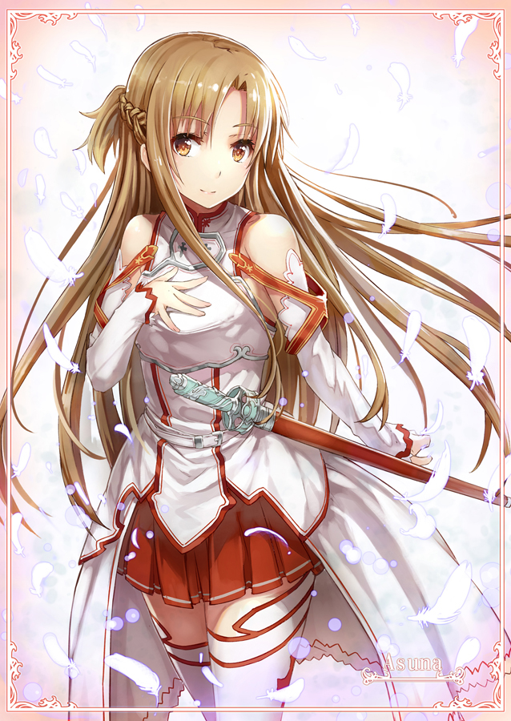

简介：
声优：户松遥
[台]丘梅君[港]柚子蜜
年龄：15-17（SAO经历2年）
武器：细剑·闪烁之光（SAO）；细剑、双手用法杖·世界树之杖（ALO）；细剑·Radiant Light（UW）
称号：闪光、狂暴补师
本作女主角。
SAO系统下拥有排名前五名美貌的美女玩家，实力之强可以担任最强公会「血盟骑士团」的副团长，在SAO中几乎是无人不晓的名人。
父亲是大型电子用品制造商“RECT”的原CEO，母亲是某大学中的教授。因家庭因素，从小就接受精英式的培育，
不论是自己还是兄长都被家人期望着将来有所成就，不断地作为亲戚间互相竞争与比较的对象，基于这个原因，
在好奇心的驱使之下借用了自己哥哥带回来的NERvGear进入SAO，也因此被卷入了这场死亡游戏之中。
刚开始一心只想早日脱离SAO而只把攻略游戏摆第一，其他行动全部视为浪费时间，甚至还强制他人也全速攻略。
但是了解到“活在”SAO里的桐人后改变想法，回复原本开朗的个性，找到了新的人生目标，也因此喜欢上桐人，并开始对其积极追求。
SAO被完全攻略后并未顺利登出，而是因为须乡伸之的阴谋被困在ALO中，后由桐人救出，回到现实世界后两人成为恋人。
Alicization篇中，为了鼓励失意且灵魂受损的桐人而使用GM帐号“创世之神·丝提西亚”登入Under World，与桐人并肩作战。
最终在Under World战争中获得胜利，但因极限加速被开启的缘故而与桐人一同留在Under World内近二百年的时间。
在此期间与桐人结婚，并被推举为Under World的「星王后」，与桐人一起治理Under World。
在经过了现实世界的两个月后，于爱丽丝的呼唤下奇迹般与桐人一同醒来，然后与桐人将这两百年间的记忆全数删除。